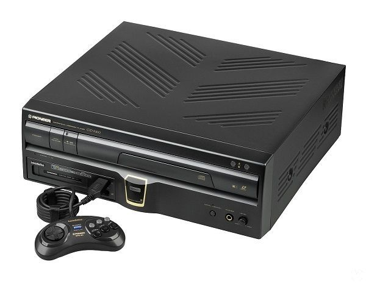
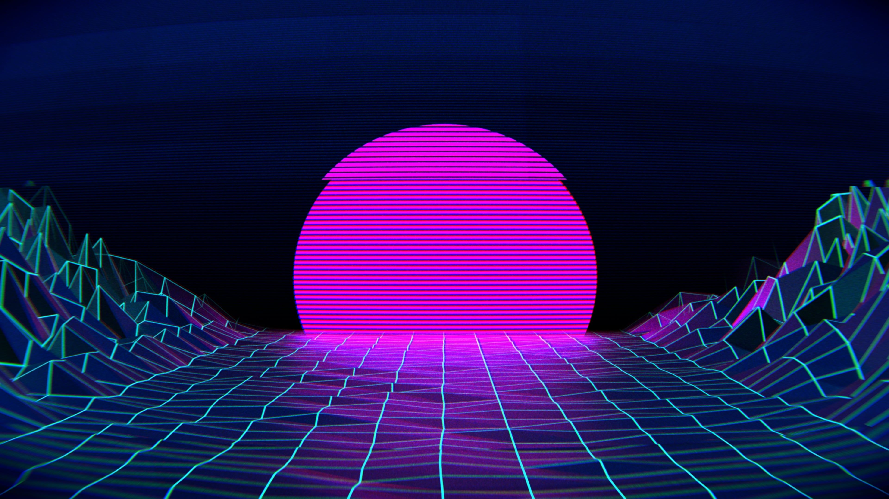
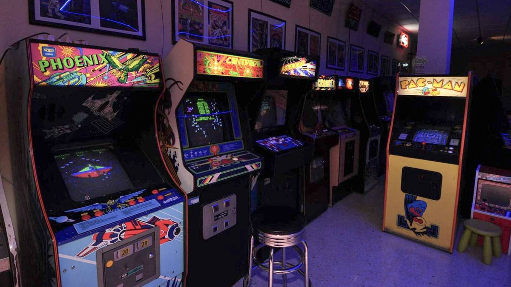
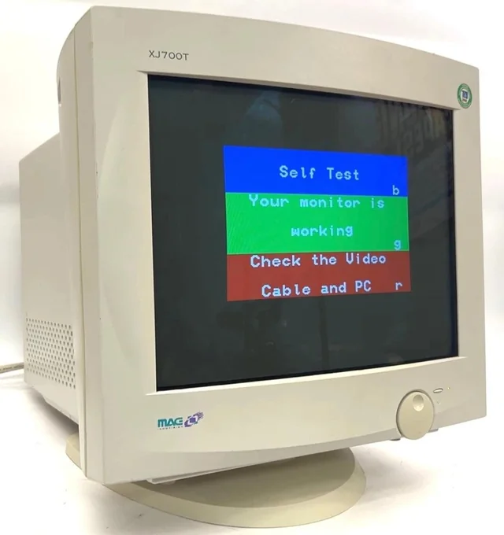
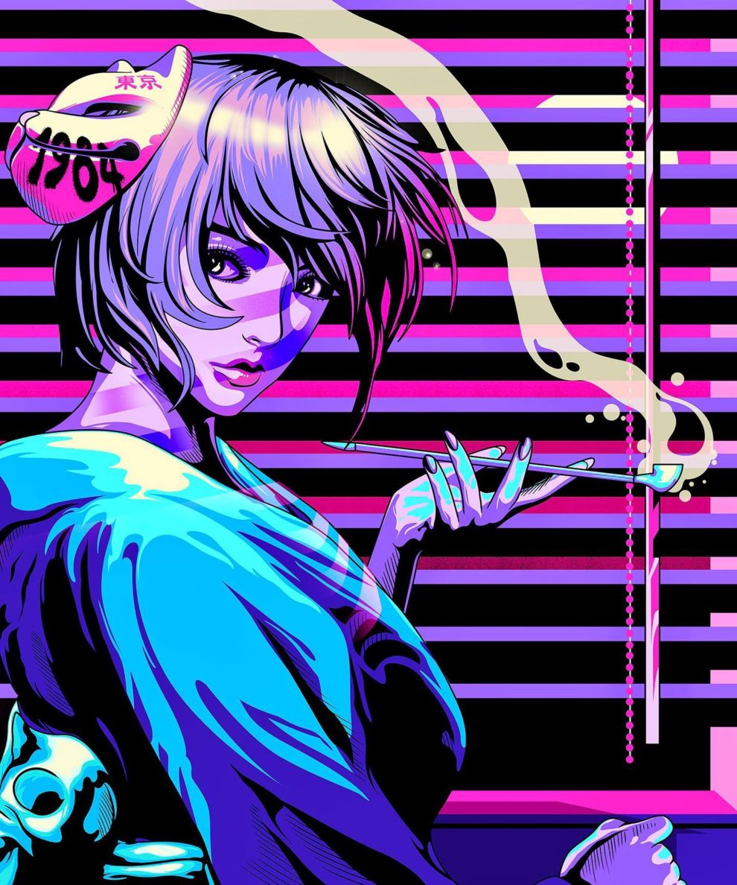

08 SEP 2026 | RETRO GAMING
TOP 5 CONSOLAS MÁS RARAS DE LOS 90
Descubre las joyas de hardware olvidadas que intentaron competir con SNES y PlayStation...

05 SEP 2026 | TCG & COLECCIONABLES
CÓMO RECONOCER CARTAS TCG FALSAS
Guía rápida para identificar imitaciones en el mercado de cartas coleccionables...

01 SEP 2026 | MÚSICA SYNTHWAVE
EL RENACIMIENTO DEL SYNTHWAVE
Por qué los sintetizadores analógicos y la estética de los 80 dominan la escena musical...

28 AGO 2026 | ARCADES & SALONES
LA HISTORIA DE LOS SALONES ARCADE
Un viaje en el tiempo a la época dorada de las fichas, las luces de neón y los récords...

22 AGO 2026 | HARDWARE CLASSIC
¿POR QUÉ LOS MONITORES CRT ESTÁN DE VUELTA?
Los gamers entusiastas prefieren las pantallas tubulares por sobre los paneles OLED modernos...

15 AGO 2026 | ARTE Y DISEÑO
ESTÉTICA VAPORWAVE: MÁS QUE SOLO NEÓN
Bustos griegos, palmeras, atardeceres en cuadrícula y tecnología de los 90 explicada...